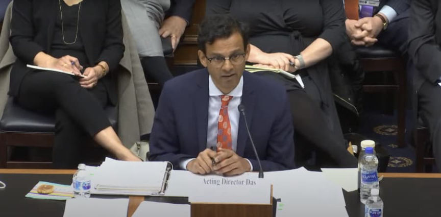
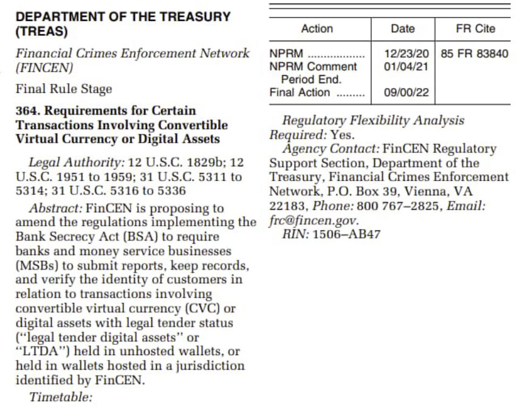
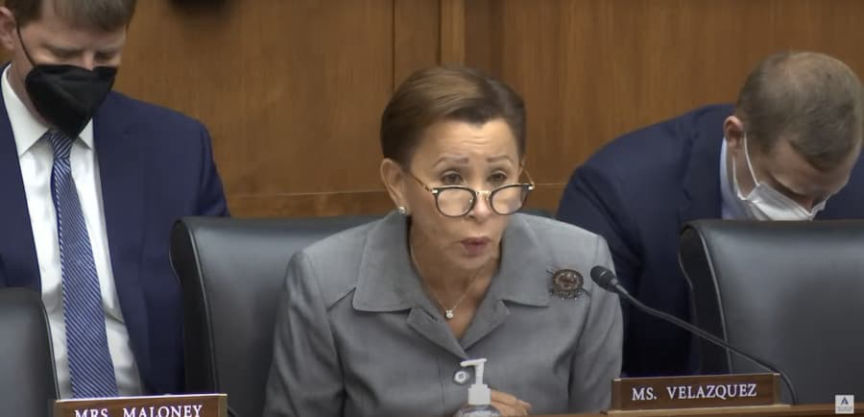
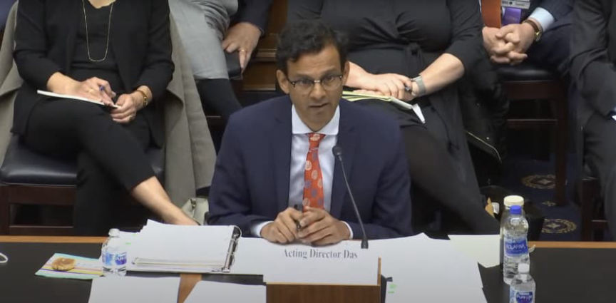
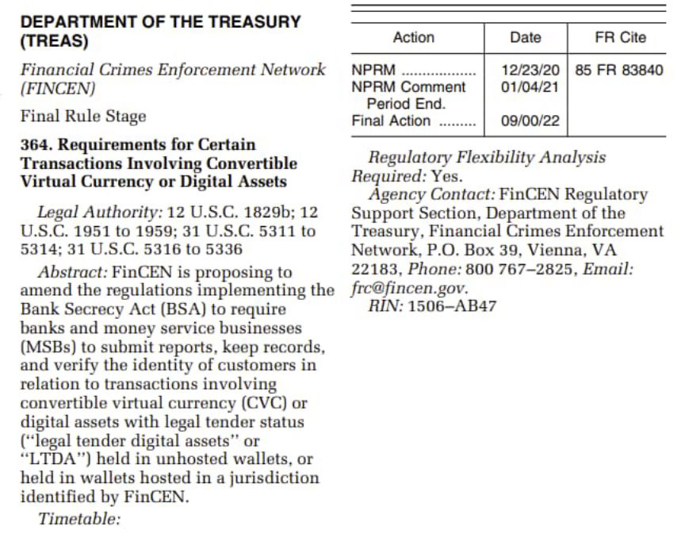
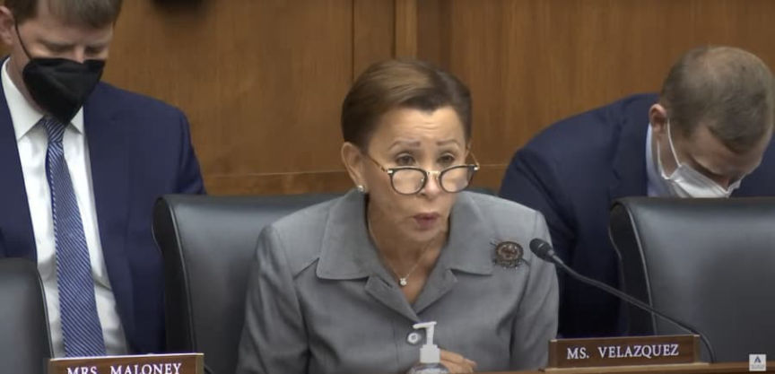

FinCEN: PATRIOT Act Is Not the Right Size for Crypto Threats
~2 min read | Published on 2022-04-29, tagged PATRIOT-Act using 458 words.
The acting director of the United States Financial Crimes Enforcement Network, Him Das, laid the groundwork for expanding PATRIOT Act powers to counter the so-called “threats” posed by cryptocurrency.
Das’ comments were a part of a House Financial Services Committee hearing on “Oversight of the Financial Crimes Enforcement Network.” During the hearing, Kentucky Representative Andy Barr pointed out that the Financial Crimes Enforcement Network (FinCEN) rarely used the “special measures” authorized under Section 311 of the PATRIOT Act.
Section 311 is summarized by the Treasury Department as “a range of options that can be adapted to target specific money laundering and terrorist financing risks most effectively.”

Das explained that Section 311 applied primarily to traditional financial systems. “Section 311 was enacted in a time when most financial relationships and transactions were done through the traditional banking system where there are traditional correspondent account relationships,” he said. “Nowadays, cross-border transactions often include money services businesses, payment systems, […] foreign exchange houses as well as cryptocurrency.” Das also hinted at the need to expand FinCEN’s powers under Section 311. “Currently, the Section 311 authority is not right-sized for the types of threats that we’re seeing through the use of cryptocurrency.”
Das also spoke about FinCEN’s plans to regulate “unhosted wallets.” The Treasury Department’s regulatory plan from January revealed that additional cryptocurrency regulations were under consideration.

“It’s not that unhosted wallets are entirely opaque. Unhosted wallets often engage in transactions with cryptocurrency exchanges, which are subject to AML/CFT regulation […] Law enforcement can engage with cryptocurrency exchanges with respect to suspicious activity reporting and other reports that might be applicable to them in terms of getting some degree of understanding in terms of transactions with unhosted wallets as well.”

Representatives also asked questions about FinCEN’s ability to counter the potential use of cryptocurrency by “Russian oligarchs” to evade sanctions imposed by the United States. Das reiterated FinCEN’s position from March when he answered a similar question:
“In the face of mounting economic pressure on Russia, it is vitally important for U.S. financial institutions to be vigilant about potential Russian sanctions evasion, including by both state actors and oligarchs. Although we have not seen widespread evasion of our sanctions using methods such as cryptocurrency, prompt reporting of suspicious activity contributes to our national security and our efforts to support Ukraine and its people.”
At the recent hearing, Das said, “we’ve not seen large-scale evasion through the use of cryptocurrency, but we’re mindful of that and we’re working with financial institutions so that they’re aware of that potential that we can identify a large-scale evasion using cryptocurrency and act on it as well.”
“Oversight of the Financial Crimes Enforcement Network”
Memorandum pdf Summary page archive.is, archive.org, financialservices.house.gov YouTube broadcast youtube.com
Das’ comments were a part of a House Financial Services Committee hearing on “Oversight of the Financial Crimes Enforcement Network.” During the hearing, Kentucky Representative Andy Barr pointed out that the Financial Crimes Enforcement Network (FinCEN) rarely used the “special measures” authorized under Section 311 of the PATRIOT Act.
Section 311 is summarized by the Treasury Department as “a range of options that can be adapted to target specific money laundering and terrorist financing risks most effectively.”

Acting Director of the United States Financial Crimes Enforcement Network, Him Das
Das explained that Section 311 applied primarily to traditional financial systems. “Section 311 was enacted in a time when most financial relationships and transactions were done through the traditional banking system where there are traditional correspondent account relationships,” he said. “Nowadays, cross-border transactions often include money services businesses, payment systems, […] foreign exchange houses as well as cryptocurrency.” Das also hinted at the need to expand FinCEN’s powers under Section 311. “Currently, the Section 311 authority is not right-sized for the types of threats that we’re seeing through the use of cryptocurrency.”
Das also spoke about FinCEN’s plans to regulate “unhosted wallets.” The Treasury Department’s regulatory plan from January revealed that additional cryptocurrency regulations were under consideration.

🪝🪝🪝
“It’s not that unhosted wallets are entirely opaque. Unhosted wallets often engage in transactions with cryptocurrency exchanges, which are subject to AML/CFT regulation […] Law enforcement can engage with cryptocurrency exchanges with respect to suspicious activity reporting and other reports that might be applicable to them in terms of getting some degree of understanding in terms of transactions with unhosted wallets as well.”

🪝🪝🪝
Representatives also asked questions about FinCEN’s ability to counter the potential use of cryptocurrency by “Russian oligarchs” to evade sanctions imposed by the United States. Das reiterated FinCEN’s position from March when he answered a similar question:
“In the face of mounting economic pressure on Russia, it is vitally important for U.S. financial institutions to be vigilant about potential Russian sanctions evasion, including by both state actors and oligarchs. Although we have not seen widespread evasion of our sanctions using methods such as cryptocurrency, prompt reporting of suspicious activity contributes to our national security and our efforts to support Ukraine and its people.”
🪝🪝🪝
At the recent hearing, Das said, “we’ve not seen large-scale evasion through the use of cryptocurrency, but we’re mindful of that and we’re working with financial institutions so that they’re aware of that potential that we can identify a large-scale evasion using cryptocurrency and act on it as well.”
“Oversight of the Financial Crimes Enforcement Network”